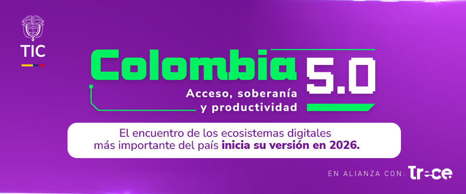

| English | Español | Definición | Definition |
|---|---|---|---|
| Cloud Computing | Computación en la nube | Servicios y recursos ofrecidos por internet. | Services and resources provided through the internet. |
| Artificial Intelligence | Inteligencia Artificial | Tecnología que permite a las máquinas aprender y tomar decisiones. | Technology that allows machines to learn and make decisions. |
| Machine Learning | Aprendizaje Automático | Rama de la IA que aprende mediante datos. | Branch of AI that learns through data. |
| Big Data | Grandes Datos | Procesamiento de grandes volúmenes de información. | Processing of large volumes of information. |
| Cybersecurity | Ciberseguridad | Protección de sistemas y datos digitales. | Protection of digital systems and data. |
| Blockchain | Cadena de bloques | Tecnología de registro seguro y descentralizado. | Secure and decentralized record technology. |
| User Interface | Interfaz de Usuario | Diseño visual con el que interactúa el usuario. | Visual design used by users to interact. |
| User Experience | Experiencia de Usuario | Sensación y facilidad de uso de un sistema. | Feeling and usability of a system. |
| Game Design | Diseño de Videojuegos | Proceso creativo para desarrollar videojuegos. | Creative process of developing video games. |
| Automation | Automatización | Uso de tecnología para realizar tareas automáticamente. | Use of technology to perform tasks automatically. |
| Digital Transformation | Transformación Digital | Integración de tecnologías digitales en empresas. | Integration of digital technologies into companies. |
| Software Development | Desarrollo de Software | Creación de programas y aplicaciones. | Creation of programs and applications. |
| Programming | Programación | Escritura de código para crear software. | Writing code to create software. |
| Database | Base de Datos | Sistema para almacenar información. | System used to store information. |
| Virtual Reality | Realidad Virtual | Entorno digital simulado inmersivo. | Immersive simulated digital environment. |
| Augmented Reality | Realidad Aumentada | Elementos digitales integrados al mundo real. | Digital elements integrated into the real world. |
| Innovation | Innovación | Creación de nuevas ideas o tecnologías. | Creation of new ideas or technologies. |
| Networking | Redes | Conexión entre dispositivos digitales. | Connection between digital devices. |
| Responsive Design | Diseño Responsivo | Adaptación visual a diferentes pantallas. | Visual adaptation to different screens. |
| Accessibility | Accesibilidad | Facilidad de uso para todas las personas. | Ease of use for all people. |
| Interface | Interfaz | Espacio de interacción entre usuario y sistema. | Interaction space between user and system. |
| Mobile Application | Aplicación Móvil | Programa diseñado para funcionar en dispositivos móviles. | Software designed to run on mobile devices. |
| Web Development | Desarrollo Web | Creación y mantenimiento de sitios web. | Creation and maintenance of websites. |
| Internet of Things (IoT) | Internet de las Cosas | Conexión de objetos físicos a internet para intercambiar datos. | Connection of physical objects to the internet to exchange data. |
| Data Analysis | Análisis de Datos | Proceso de examinar información para obtener conclusiones útiles. | Process of examining information to obtain useful conclusions. |
| Digital Marketing | Marketing Digital | Promoción de productos o servicios mediante medios digitales. | Promotion of products or services through digital media. |
| E-commerce | Comercio Electrónico | Compra y venta de productos o servicios por internet. | Buying and selling products or services online. |
| Smart Cities | Ciudades Inteligentes | Ciudades que utilizan tecnología para mejorar la calidad de vida. | Cities that use technology to improve quality of life. |
| Mobile Devices | Dispositivos Móviles | Equipos portátiles como teléfonos inteligentes y tabletas. | Portable devices such as smartphones and tablets. |
| Information Technology (IT) | Tecnología de la Información | Uso de sistemas informáticos para gestionar información. | Use of computer systems to manage information. |